先說結論
故事的起源
故事的起源
故事的起源
在論述台灣房市之前，身為一個
資料科學家，第一步是了解問題
本次，我們的問題是
房價真的太高了嗎?
還記得這個新聞吧？ 就從這裡開始
資料在哪裡
從上面新聞所述，所以我們想要:
資料在哪裡
從上面新聞所述，所以我們想要:
資料在哪裡
從上面新聞所述，所以我們想要:
即便知道資料在哪，可是資料還是如同
一盤散沙
看看Raw Data
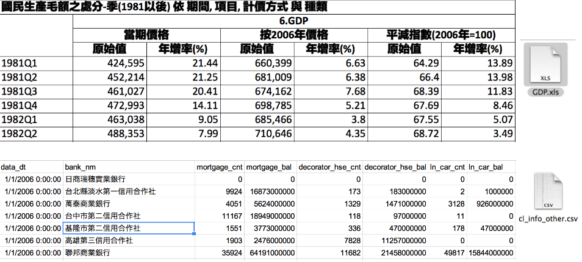
我們ETL會用到的有
dplyr可用類似SQL方法操作data fromexts處理時間格式好用的套件gdata可以處理Excel 2007以上的文件quantmod可以處理股市資料stringr字串相關處理
來上課的，有
福了
DSC的One Piece
DSC2014TutorialR社群為了這次Tutorial製作的套件，所有的教材都在這了
deps <- available.packages("http://taiwanrusergroup.github.io/R/src/contrib")[1,"Imports"]
pkgs <- strsplit(gsub("\\s", "", deps), ",")[[1]]
for(i in seq_along(pkgs)) {
# You can change your favorite repository
if (require(pkgs[i], character.only = TRUE)) next
install.packages(pkgs[i], repo = "http://cran.csie.ntu.edu.tw")
}
install.packages('DSC2014Tutorial',
repo = 'http://taiwanrusergroup.github.io/R', type = 'source')
library(DSC2014Tutorial)
安裝之後, 輸入以下指令就可以打開投影片:
slides("ETL")
解決資料散亂的方法 - ETL
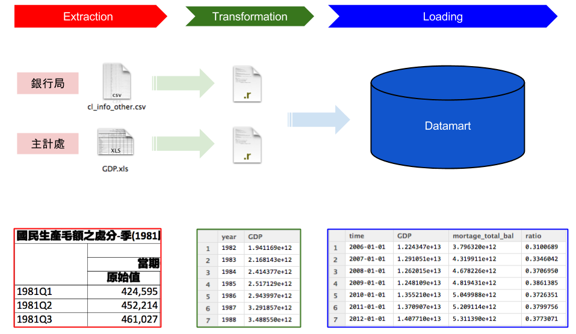
ETL 的主要內容
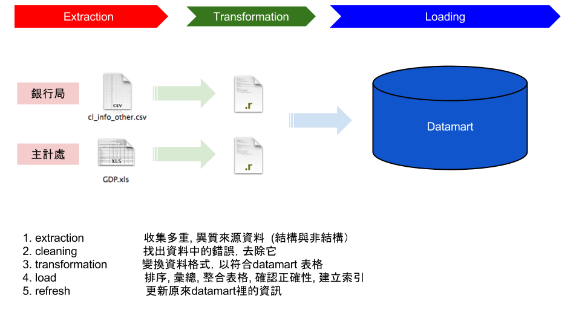
今日解決的問題流程 - ETL
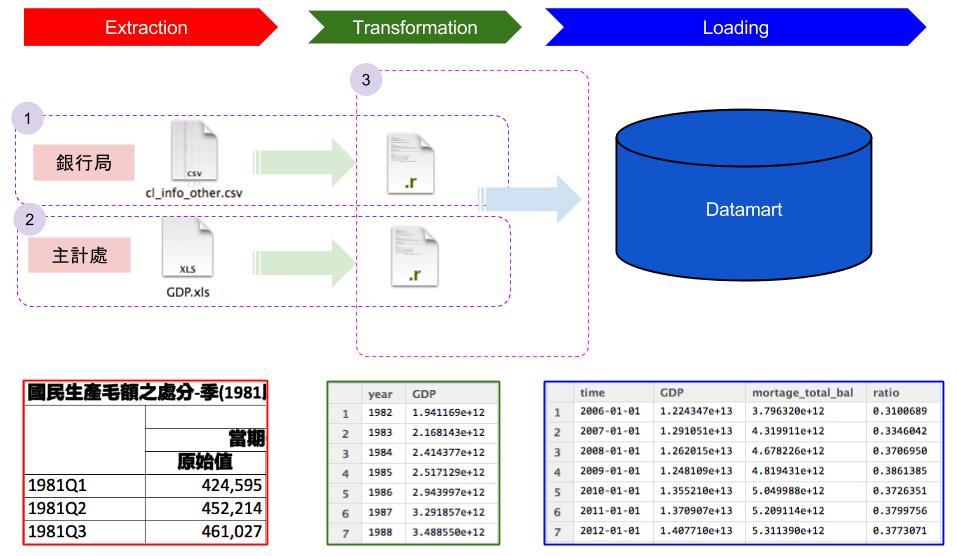
今日課程的目標
學會extraction, cleaning, transformation
- 用R整理
結構化資料 STEP1 房貸餘額1 , STEP2 GDP - 用R整理
非結構化資料 STEP3新聞分析
學會 load
- 整併全部的資料 STEP4
邁向 其他有意思的主題
學習，實作，觀察 STEP1
ETL 第一步
開始收集資料(房貸餘額)
請連線到
https://survey.banking.gov.tw/statis/stmain.jsp?sys=100&funid=r100
開始收集資料
房貸餘額,直接下載現成的csv檔案
- 直接到https://raw.githubusercontent.com/ntuaha/TWFS/master/db/cl_info_other.csv下載檔案
- 應該會看見
cl_info_other.csv - 讀入它!
或是
library(DSC2014Tutorial)
ETL_file("cl_info_other.csv")
讀入資料 - read.table
至少要記得的 read.table
Cl_info = read.table(file=ETL_file("cl_info_other.csv"),sep=",",stringsAsFactors=F,header=T)
- 輸出形態為
Data Frame - file 就是指讀入的檔案路徑
- sep 指的是欄位分割用的符號,通常csv檔案格式是透過
,做分割 - stringsAsFactors 預設是
True, 會讓讀入的字串都用Factor形態儲存，那麼資料就會轉為整數儲存與額外的對照表 - header 預設是
False，表示第一行是不是表格標頭，作為輸出的dataframe欄位名的colnames
看看讀入結果
View(Cl_info)
str(Cl_info)
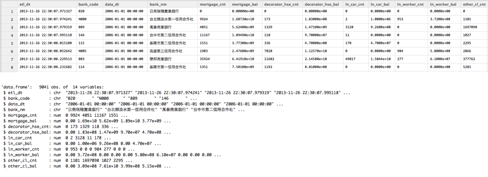
直接讀入是否覺得怪怪的?
再看一次
etl_dtdata_dt是文字但應該是時間bank_code也是文字但應該是factor
Transformation - 資料處理
將資料讀入
library(DSC2014Tutorial)
library(dplyr)
Cl_info = read.table(file=ETL_file('cl_info_other.csv'),header=T,sep=",",stringsAsFactors=F)
Cl_info_part = mutate(Cl_info,data_dt = as.POSIXct(data_dt),
bank_code = as.factor(bank_code),etl_dt = as.POSIXct(etl_dt))
View(Cl_info_part)
str(Cl_info_part)
- 到這裡已經完成第一次的資料
Extraction與Transformation了！
看見資料了!但是剛剛處理過程中的
mutate是什麼?
看見資料了!但是剛剛處理過程中的
mutate是什麼?
在
R中用來做資料清理與資料處理好用的套件dplyr其中之一的函式
接下來我們將介紹三個基本函式

練習-挑選欄位(1/2)
dplyr select 函式，用來挑選欄位
練習-挑選欄位(2/2)
dplyr select 函式，用來挑選欄位
練習-挑選資料
dplyr filter 函式，用來保留要留下的資料列
練習-增加特徵欄位(1/2)
dplyr mutate 用來增加非彙總計算欄位
練習-增加特徵欄位(2/2)
dplyr mutate 用來增加非彙總計算欄位
練習-排序資料(1/2)
dplyr arrange 用來重新排序
練習-排序資料(2/2)
dplyr arrange 用來重新排序
練習時間
- 請幫忙從Cl_info_part找出
data_dt,bank_nm,mortgage_bal - 請幫忙從Cl_info_part挑選出
mortgage＿bal大於1千萬的銀行資料 - 請幫忙排序Cl_info_part出
mortgage＿bal由小到大，但資料時間data_dt從大到小 - 請執行下面程式碼，我們後續會利用
Cl_info_part2
Cl_info_part2 = mutate(Cl_info_part,time= as.POSIXct(data_dt))
學習，實作，觀察 STEP2
讓我們來練習抓下一個資料
GDP
ETL 第二步
開始收集資料(GDP)
請連線到 http://ebas1.ebas.gov.tw/pxweb/Dialog/NI.asp
開始收集資料(GDP)
- GDP從直接下載
國民生產毛額之處分 - 季(1980之後）
- 選全部的日期
- 選全部的計價方式
- 項目選GDP
- 總類選原始值
- 按繼續後，選從螢幕顯示Excel檔
- 開啟後，另存新檔成csv檔
- 開回
RStudio開始處理資料
或是ETL_file("GDP.txt")
練習讀入與創建一個
GDP的 data frame
答案
GDP = read.table(file=ETL_file("GDP.txt"),sep=",",stringsAsFactors=F,header=F)
輸入
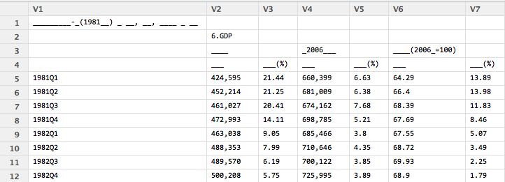View(GDP)觀察GDP會發現怎麼前後有很多列的資料是不要的
好亂，我想整理好這個data frome
資料清理
去除前後不相干的資料列
GDP_part = GDP[5:136,]
別忘了改上欄位名稱
colnames(GDP_part) = c("time","GDP","GDP_yoy","GDP_2006","GDP_2006_yoy",
"GDP_minus","GDP_minus_yoy")
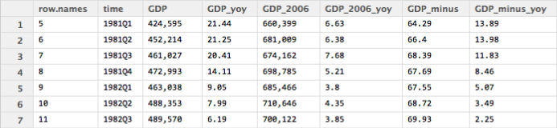
去除rownames
rownames(GDP_part) = NULL
View(GDP_part)
另外一個簡單的例子
iris
iris_part <- iris[4:6,]
rownames(iris_part) <- c('a','c','d')
View(iris_part)
轉移文字格式
# 去除中間不合理的,在數字欄位上與補上百萬
GDP_part2= mutate(GDP_part,GDP = as.numeric(gsub(",", "",GDP))*1000000)
- 我們利用了
gsub, 替換字元，將原先有問題的,去除 - 而後利用了
as.numeric將原來的文字形態改成數字
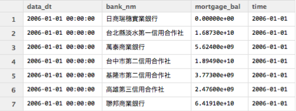
抽離年份與季
GDP_part3 = mutate(GDP_part2,year=as.numeric(substr(time,0,4)),
season=as.numeric(substr(time,6,6)))
GDP_part4 = select(GDP_part3,year,season,GDP)
- 我們利用了
substr, 取出特定位置的資料 - 再次利用
as.numeric, 將文字轉成數字
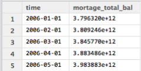
練習時間
- 去除頭尾不合理的資料列
- 去除GDP的
,, 然後將它轉成數字 - 將
year,season抽離出來並轉成數字，同時最後資料只保留GDP,year,season
擁有了
GDP和房貸餘額，那接下來呢?
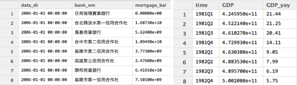
非結構化的新聞與股市資料!
學習，實作，觀察 STEP3
ETL 第三步
學習，實作，觀察 STEP4
ETL 最後一步
資料整併
要處理的標的物有
- 將房貸餘額匯總到
每個月的資料 - 將GDP匯總到
每年的資料 - 透過
年份將房貸餘額與GDP的表結合起來
資料整併流程
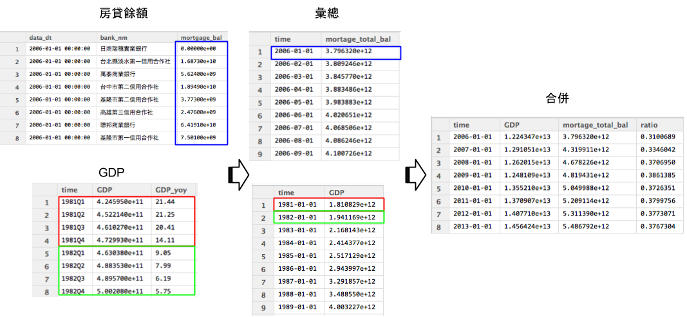
資料彙總
將介紹 group_by, summarize
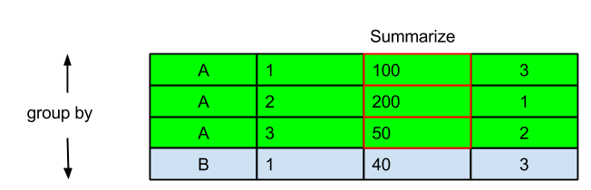
練習-資料彙總(1/2)
group by 可加先下也可不下，不下的情況是直對接
全部資料做集匯總運算
練習-資料彙總(2/2)
- 將房貸餘額每個月的值算出來
- 將GDP每年的值算出來
GDP_part5 = filter(summarise(group_by(GDP_part4,year),GDP=sum(GDP)),is.na(year)==F)
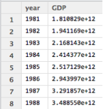
彙總函數 summarise
可以使用的函數如下所列
- mean 平均值
- sum 加總
- n 計算個數 例如: A B B C 輸出
4 - n_distinct 計算不同物件的個數 例: A B B C 輸出
3 - max, min 最大或最小值
- median 中位數
mean
請計算每月全體銀行餘額平均值(eg1)
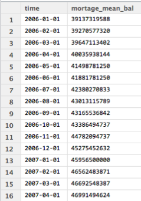
n
請計算每個月有多少家銀行有房貸餘額(eg2)
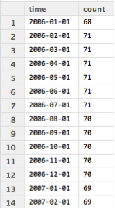
n_distinct
請計算每年有多少家銀行有房貸餘額(eg3)
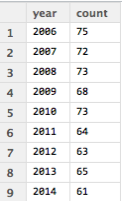
max
請計算每月單一銀行擁有的最多房貸餘額(eg4)
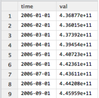
first, last
請計算每月房貸餘額排名第ㄧ的銀行(eg5)
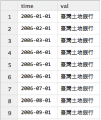
複雜一點的函數
- first 該群體第一個，可配合
order_by使用; first(x,order_by=y) - last 該群體最後一個，可配合
order_by使用; last(x,order_by=y) - nth 該群體的第n個，可配合
order_by使用; nth(x,10))
nth
請計算每月房貸餘額排名第2的銀行 (eg6)
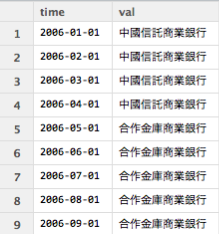
練習題目- 解答(1/2)
eg1 = summarise(group_by(Cl_info_part2,time) ,
mortage_mean_bal = mean(mortgage_bal, na.rm = TRUE))
eg2_1 = filter(Cl_info_part2,mortgage_bal >0)
eg2_2 = summarise(group_by(eg2_1,time),count = n())
eg3_1 = filter(Cl_info_part2,mortgage_bal >0)
eg3_2 = mutate(eg3_1,year = format(time,"%Y"))
eg3_3 = summarise(group_by(eg3_2,year),count = n_distinct(bank_nm))
練習題目- 解答(2/2)
eg4 = summarise(group_by(Cl_info_part2,time),
val = max(mortgage_bal))
eg5_1 = arrange(Cl_info_part2,time,desc(mortgage_bal))
eg5_2 =summarise(group_by(eg5_1,time),val = first(bank_nm))
eg6_1 = arrange(Cl_info_part2,time,desc(mortgage_bal))
eg6_2 = summarise(group_by(eg6_1,time),
val = nth(bank_nm,2))
接下來比較難，真的!!!!
結合表格
- cbind 用來做
1-1水平結合 - rbind 用來做 垂直結合
- left_join 用來做
多對多水平結合 - inner_join 用來做
多對多水平結合
看得懂在幹嘛嗎?
圖解結合表格
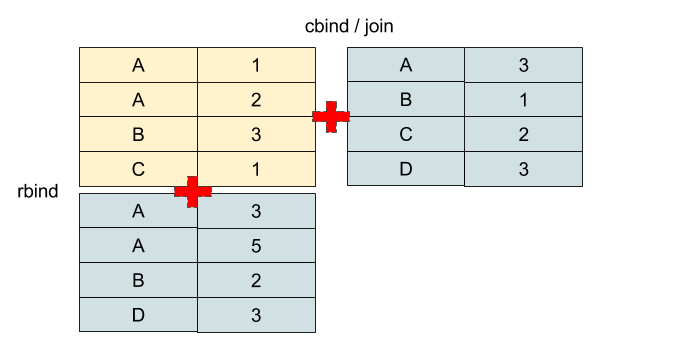
join講解前資料準備
join講解前資料準備
dplyr 介紹 - left_join
參數by 指出以何欄位作為對照鍵值
透過先前創建的x與y，以及交集的鍵值c1
ljxy = left_join(x,y,by="c1") #以X為主
ljyx = left_join(y,x,by="c1") #以Y為主
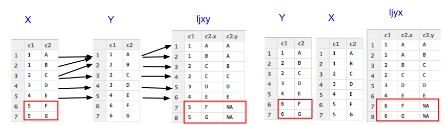
dplyr 介紹 - inner_join
實際問題 - 練習題
請問，這兩張表該怎麼結合比較好?
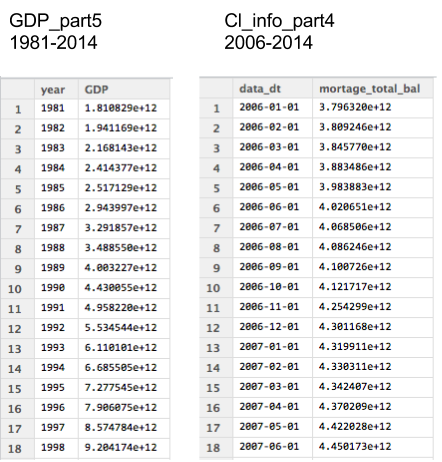
請問，這兩張表該怎麼結合比較好?用誰當第一參數?
- left_join Cl_Info_part4
- semi_join Cl_Info_part4
- left_join GDP_part5
- inner_join GDP_part5
- 其他
因為GDP_part5_所俱有的時間點較少，用這個當作主鍵是比較好的.
練習
- 將GDP與房貸餘額，透過1月的資訊整理起來
GDP_part6 = select(mutate(GDP_part5 ,
time = as.POSIXct(paste(year,'1','1',sep='-'))),time,GDP)
t1 = left_join(GDP_part6,Cl_info_part4,by="time")
t2 = filter(t1,is.na(mortage_total_bal)==FALSE)
看一下資料 View(t2)
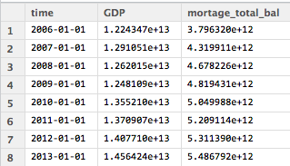
最後一里路
接下來我們應該做(1/3) - 畫圖
see1 = filter(mutate(t2,ratio =mortage_total_bal/GDP),is.na(ratio)==FALSE)
接下來我們應該做(2/3) - 解釋
利用解釋將圖想要表達的意思更清楚地傳達給觀眾
接下來我們應該做(3/3) - 報告
將所有的解釋與圖表包裝成一個故事，展現出來
Review
我們做了什麼?
額外延伸主題
自動化
- 建立R Script
iris
iris_part <- iris[4:6,]
rownames(iris_part) <- c('a','c','d')
write.csv(iris_part,file="[想要的目錄]/GG.csv")
- 儲存到特定位置下 假定叫做Script.R
- 在terminal執行
R CMD BATCH [該檔案儲存位置]/Script.R
- 可透過
crontab定期執行
從網路讀檔案
- 安裝套件
install.packages("RCurl")
library(RCurl)
- 讀檔案 (非Windows)
DF = read.table(sep=",", header=TRUE,
file= textConnection(
getURL("https://raw.githubusercontent.com/ntuaha/TWFS/master/db/cl_info_other.csv")
))
- 讀檔案 (Windows)
DF = read.csv(sep=",", header=TRUE,
file="https://raw.githubusercontent.com/ntuaha/TWFS/master/db/cl_info_other.csv",
fileEncoding="UTF-8")
Speical
Topics
- 自動化排程
- 與資料庫溝通
- 其他的資料源
- 結構化資料
- 非結構化資料
- 培養對資料的品味